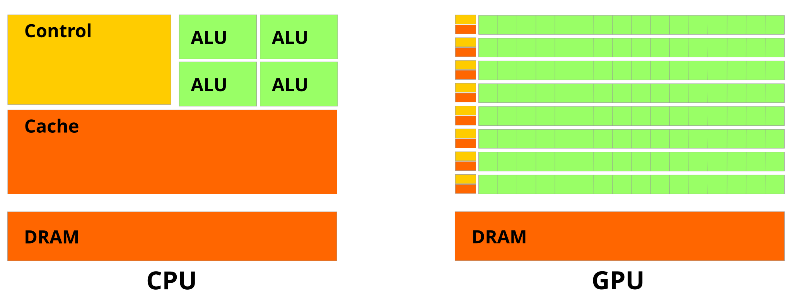
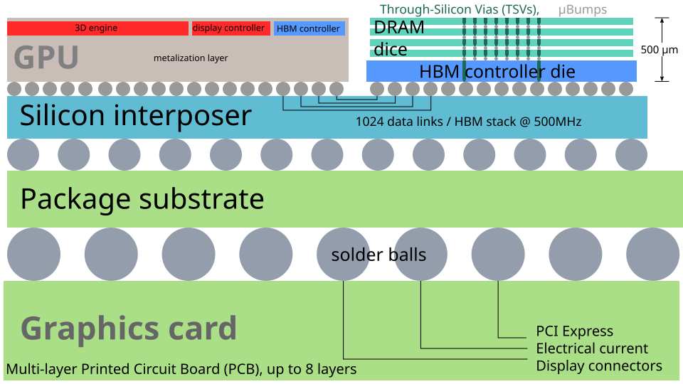
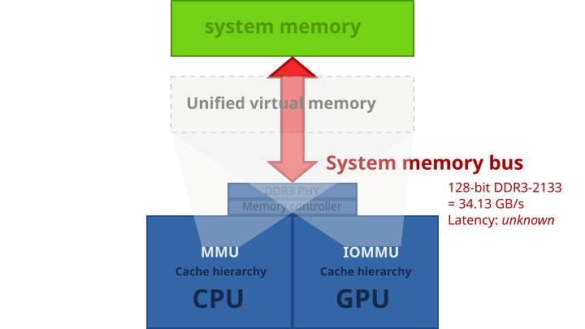

How AI changes the system
Follow inference through CPUs, GPUs, HBM, CXL and processing near memory.
Follow one inference request
- CPU and runtimeTokenize, queue requests, schedule batches, and submit work.
- PrefillProcess the prompt in parallel and populate key/value state for attention.
- DecodeGenerate tokens in order. Reuse earlier K/V state and append the new token’s state.
- ReturnThe runtime streams output and frees or reuses resources when requests finish.
Prefill and decode place different demands on arithmetic, memory and scheduling. Exact bottlenecks vary with model, batch and context.
Prefill often gives matrix units more parallel work per request. Small-batch decode can spend much of its time streaming model weights and accessing K/V state for each generated step. More batching can reuse weight reads across requests but consumes more K/V capacity and changes latency. Measure time to first token, time between tokens and aggregate tokens per second separately.
Why the CPU and GPU are designed differently
| Aspect | CPU | GPU |
|---|---|---|
| Execution | Large cores handle diverse control flow and try to make a few threads finish quickly. | Many groups of lanes keep arithmetic units busy. NVIDIA CUDA groups threads into warps. |
| Latency handling | Out-of-order scheduling, branch prediction and caches exploit work within a thread. | A scheduler can issue another ready warp while one waits. Diverging branches can lower lane utilization. |
| Data reuse | Hardware caches and vector or matrix instructions help reuse nearby data. | A kernel arranges nearby accesses, tiles data and can reuse it in registers or on-chip shared memory. |

Read this early NVIDIA illustration as a qualitative comparison of control, cache and arithmetic resources. The rectangles are conceptual and their proportions do not specify a contemporary chip.
NVIDIA · CUDA Programming Guide 3.0 · Wikimedia Commons · CC BY 3.0 · Unmodified SVG
- Bring in a tileLoad a block of operands from GPU memory.
- Reuse on chipHold it in shared memory or registers across many multiply-adds.
- AccumulateUse suitable vector or matrix units and keep partial results local.
- Write backStore the output tile. Fewer external bytes per operation improve arithmetic intensity.
FlashAttention applies the same I/O-aware idea to attention and avoids materializing the full score matrix in HBM.
Some x86 CPUs add tile matrix operations such as Intel AMX. RISC-V’s optional V extension exposes vector-length-aware instructions and can support CPU-side kernels. An SoC can also pair a RISC-V CPU with an accelerator through a device interface. This choice is distinct from implementing the GPU execution model in the CPU.
Size weights and KV state before choosing memory
- On chipRegisters, SRAM and cache hold active tiles and intermediates.
- GPU HBMHigh-bandwidth capacity for hot weights and active KV blocks.
- Host memoryCPU-attached DRAM can stage data or hold offloaded state.
- Expansion and storageCXL memory or storage can add capacity when software manages placement and transport.
Illustrative tiers. Links, placement policies and performance vary by system.
KV bytes = 2 × layers × KV heads × head dimension
× bytes per element × cached tokens per sequence × sequences
32 layers × 8 KV heads × 128 dimensions × 2 B × 2 (K and V)
= 128 KiB per token and sequence
32,768 tokens → 4 GiB per sequence → 32 GiB for 8 sequencesThis is the payload for conventional attention with equal-length requests and fixed-width K and V. For grouped-query attention, use the number of KV heads, which may be smaller than query heads. Weight storage is a separate budget. For example, 70 billion parameters at 2 bytes each take about 140 GB (130.4 GiB), before runtime buffers and allocator overhead. Quantization, sharing, sharding and sequence lengths can change these totals.
PagedAttention manages KV state in blocks, so requests can grow without preallocating the maximum contiguous length and compatible prefixes can share blocks. These software blocks are an analogy to virtual memory. Their sizes and placement are managed by the serving runtime.
Three ways platforms increase usable memory
| Design | Example | What it changes |
|---|---|---|
| More GPU-local bandwidth and capacity | AMD MI355X specifies 288 GB HBM3E per accelerator. NVIDIA lists 288 GB HBM4 per Rubin GPU and announced platform production in 2026. | More hot state can stay near compute. Multi-GPU model sharding still depends on interconnect traffic. |
| Coherent CPU–GPU memory | AMD MI300A combines x86 Zen 4 cores and a CDNA 3 GPU with a coherent 128 GB HBM3 pool. | Suitable buffers can be accessed from both sides with fewer explicit copies. Locality, cache coherence and synchronization still affect the cost. |
| Host expansion or pooling | CXL Type 3 memory devices expand host-addressable memory. Later CXL fabrics support forms of pooling with suitable switches and management. | A larger or shareable capacity tier helps placement. Access latency and bandwidth depend on the link and topology. |

Follow the links from the GPU die across the silicon interposer to the HBM stacks. The link count and frequency shown are for an early HBM example. The package structure explains how a wide interface can place substantial bandwidth near compute.
ScotXW · Wikimedia Commons · CC BY-SA 4.0 · Unmodified SVG

Follow both processor paths to the same system-memory box. The original is an older HSA/DDR3 example. Its shared physical backing illustrates one design for unified memory, while MI300A uses a different implementation with shared HBM.
ScotXW · Wikimedia Commons · CC BY-SA 4.0 · Unmodified SVG
- CPU loadThe host maps an address range to memory behind a CXL device.
- Host bridge and linkA request to that range traverses the root port and, when present, a switch.
- Type 3 memory deviceThe expander’s controller accesses its attached memory and returns the data.
On a typical host, local DRAM has its own path through the on-chip memory controller. The illustrated CXL route adds a separate capacity tier.
A unified virtual address space, shared physical backing, hardware cache coherence and runtime-managed page migration are distinct properties. A platform can provide some of them without the rest. CXL 4.0 is a published specification. Actual feature support depends on the host, device, switch, firmware and OS.
The 2026 Vera host CPU is a concrete example of how this changes CPU design. NVIDIA pairs CPU-side LPDDR5X with GPU-side HBM4 and a coherent CPU–GPU link. The host runs runtimes, data movement and orchestration while the GPU handles tensor-heavy work. Those are architectural choices about where to place bandwidth, latency and coherence.
Move computation closer to the bytes
- Conventional pathRead A and B over the memory interface, compute at the processor, then write C back.
- Near-memory / PIM pathDispatch a supported operation near the memory banks. Read and combine data locally, then return only what the host needs.
Compare the bytes crossing the external link. If intermediate data must travel anyway, the benefit can shrink.
Near-memory computing places logic close to memory, for example in a logic die or controller. Digital PIM can place arithmetic in or near DRAM banks. Some compute-in-memory research instead performs operations within a memory array, including analog approaches. The programming, precision, data layout and validation constraints differ across these designs.
Samsung HBM-PIM illustrates putting arithmetic close to DRAM data. For each candidate operation, check what runs there, how operands are laid out, what must cross banks, and how CPU or GPU access is synchronized. Dense math with high on-chip reuse, bandwidth-bound vector work, and capacity-bound inference can favor different designs.